01. Rulers of the Sky
A dynamic wildlife study capturing the sharp focus, powerful wingbeats, and predatory grace of black kites and urban crows in their natural elements.
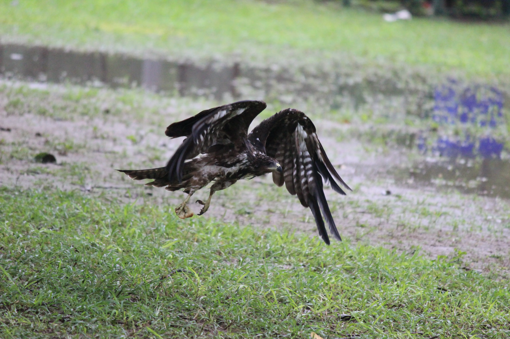


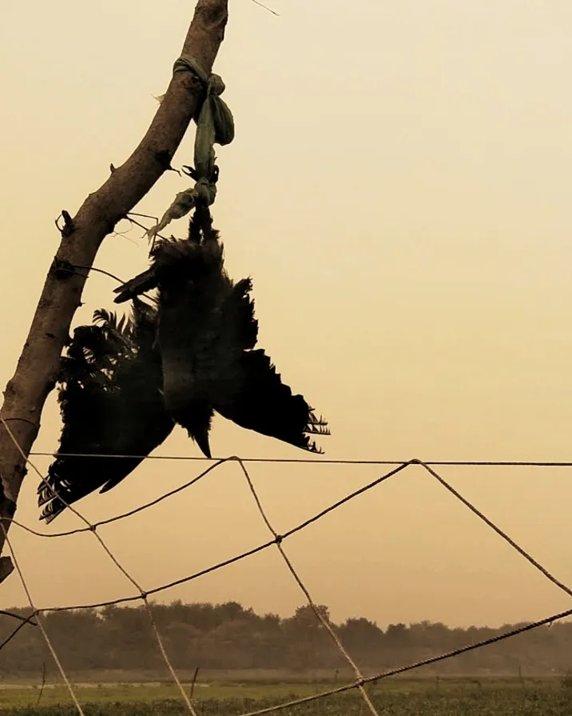
02. Where Earth Meets Silence
A poetic exploration of minimalist, mist-shrouded landscapes, capturing the quiet stillness of rural banks and endless green expanses.


03. Avian Vignettes
A close-up exploration of native birdlife, highlighting the fragile grace, sharp expressions, and quiet moments of our feathered neighbors.


04. Majesty in the Canopy
A majestic wildlife feature tracking the elegant poses, vivid plumage, and commanding presence of wild peacocks perched high within the forest canopy.
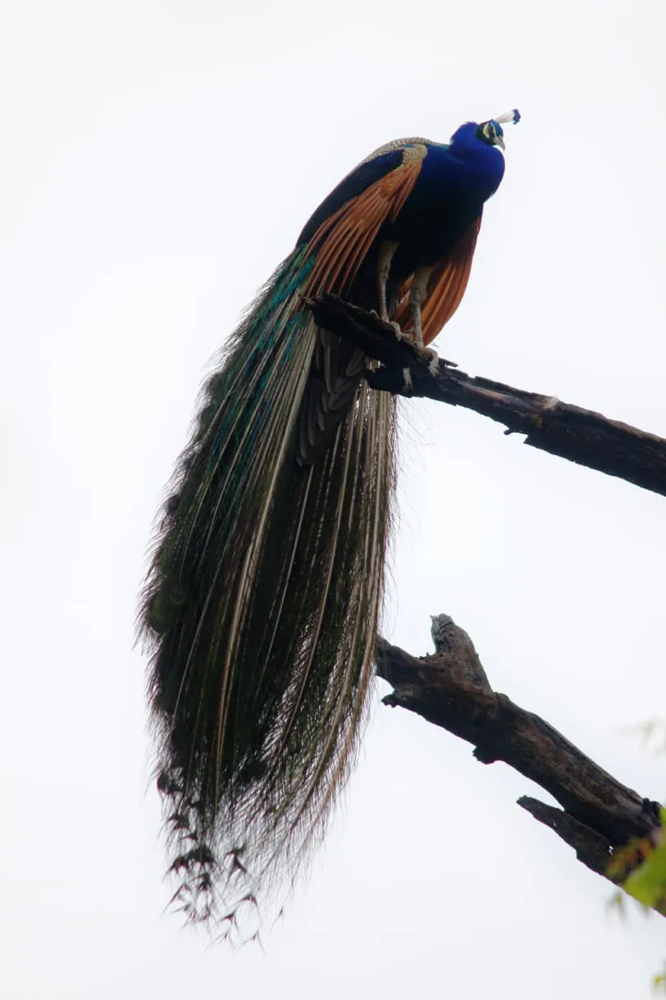

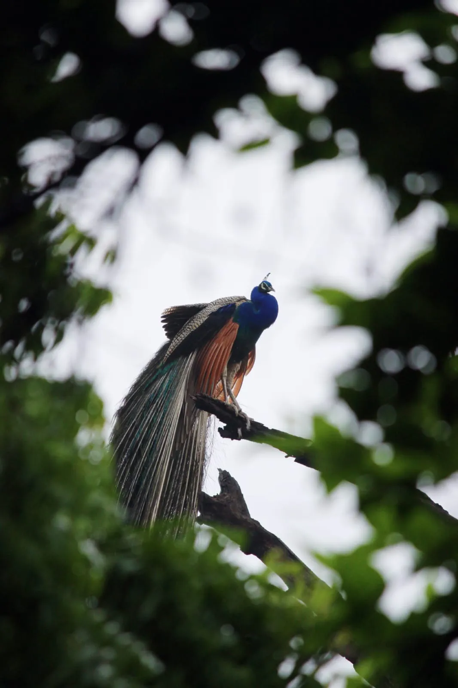
05. Faces of Joy
A heartfelt collection of portraiture capturing the raw innocence, bright smiles, and unfiltered wonder of childhood.
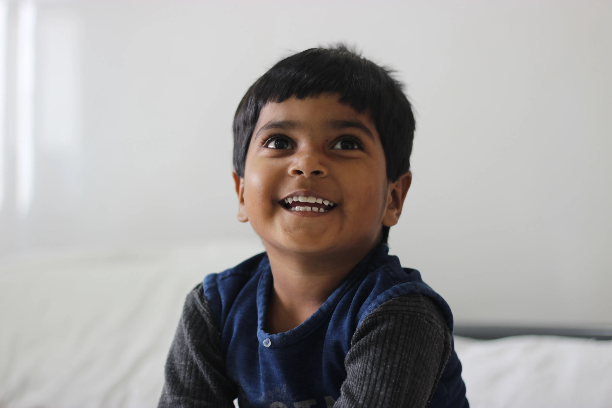
06. Tales of the Striped Forager
A close-up wildlife series focusing on the nimble movements, alert nature, and endless curiosity of the Indian palm squirrel within its urban green habitats.
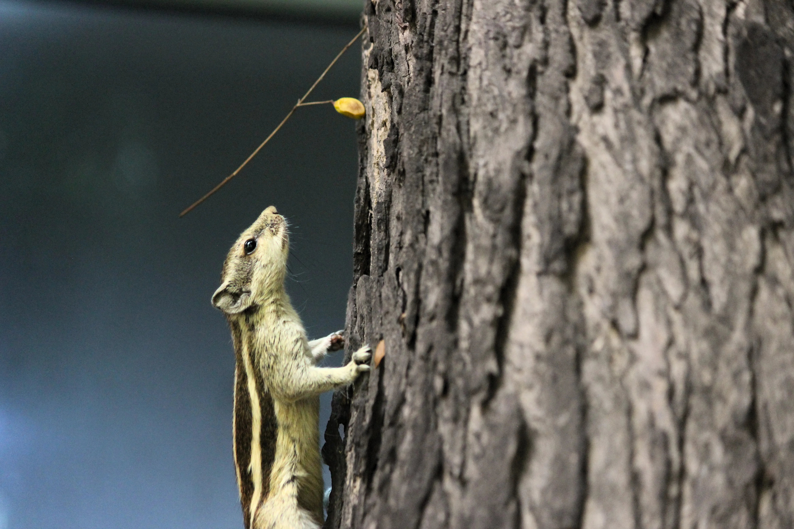
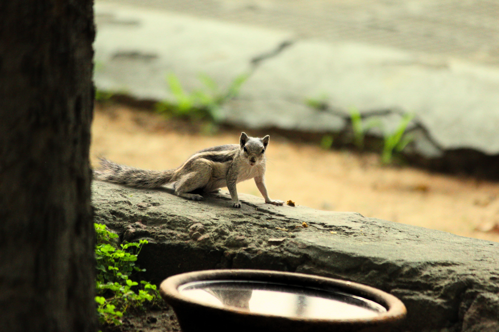
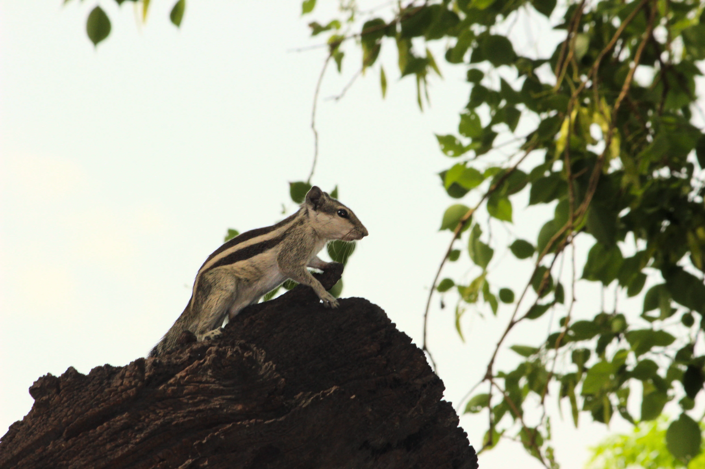
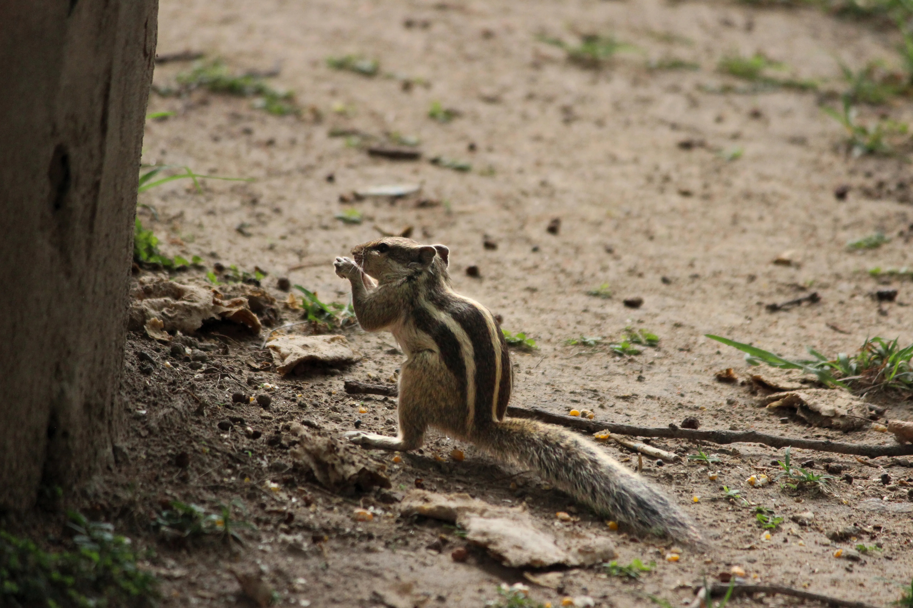
07. Rhythms of the Concrete
A compelling street photography series documenting the vibrant labor, daily transits, and candid interactions that define urban street life.


08. Microscopic Worlds
A macro photography look into the intricate details of garden life, from pollen-dusted insects to the hidden textures of caterpillars and flora.


09. Domestic Companions
Candid and intimate portraits capturing the quiet curiosity, independent spirit, and soft textures of neighborhood cats.


10. Echoes of the Past
An architectural exploration of historic monuments, focusing on structural geometry, weathered stone textures, and heritage storytelling.


11. Commercial Displays
Clean and sharp studio product photography focusing on commercial presentation, lighting precision, and material detail.
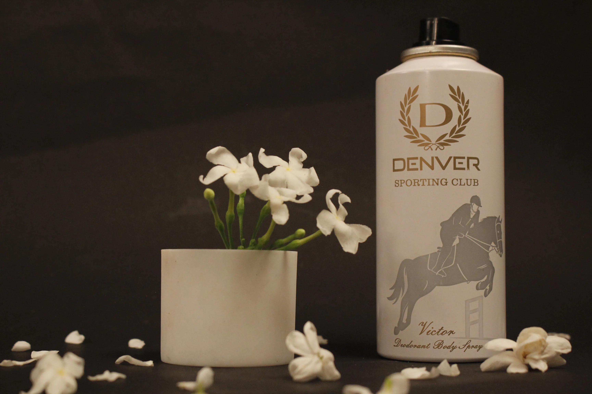
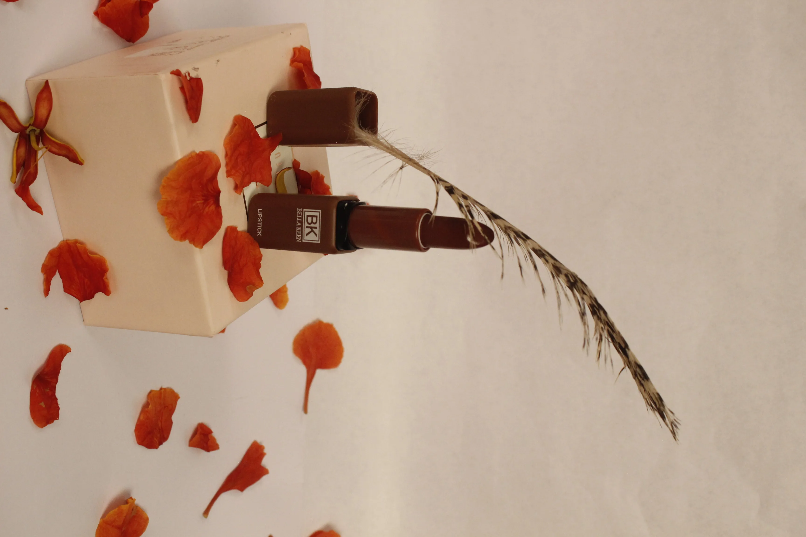
Motion & Direction
Cinematic Previews (PROMO LCA 2025)
A rhythmic and high-energy musical promotional showcase built on core themes of personal adventure, timing, companionship, and celestial wonders.

KHEL — Short Film
An emotional narrative exploring sports, perseverance, trust, competition, and friendship. Roles: Director, Cinematographer, Editor.

Expertise Matrix
Production & Capture
Videography, Cinematography, Field Documentation, Architectural & Wildlife Documentation, Event Coverage.
Production Execution & Software Tools
Adobe Premiere Pro, After Effects (Basic), Photoshop, Audition, Audacity, Canva, Capcut.
Strategic Communication
Social Media Architecture, Digital Storytelling, Outreach Strategy, Research Foundations, Cross-functional Coordination.
Selected Industry Engagement
Centre for Professional Development in Higher Education (DU)
Managed production operational logic, handled dynamic stakeholder communication arrays, system updates, and systematic participant dataset custody.
Budding Mariner
Engineered over 100 high-fidelity pedagogical diagrams and structured digital learning presentations from technical, complex raw datasets.
New Delhi Nature Society (NDNS)
Produced high-engagement micro-documentary short forms, thematic audio podcasts, and on-site media configurations for strategic conservation advocacy.